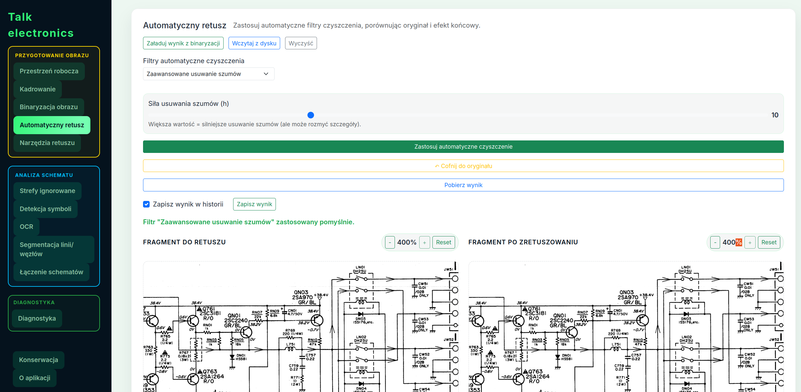
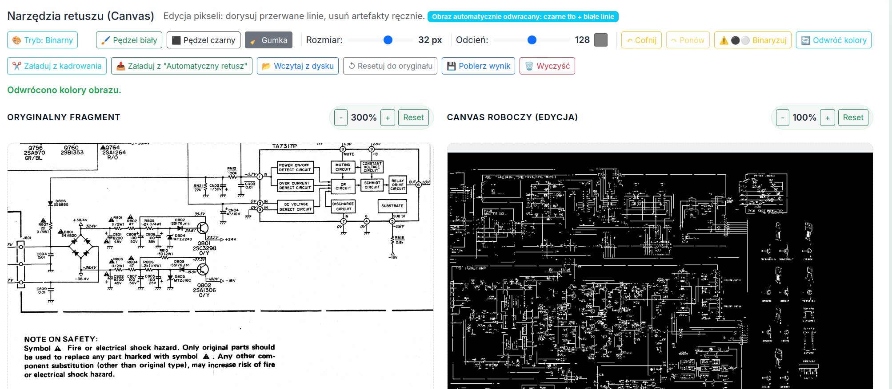
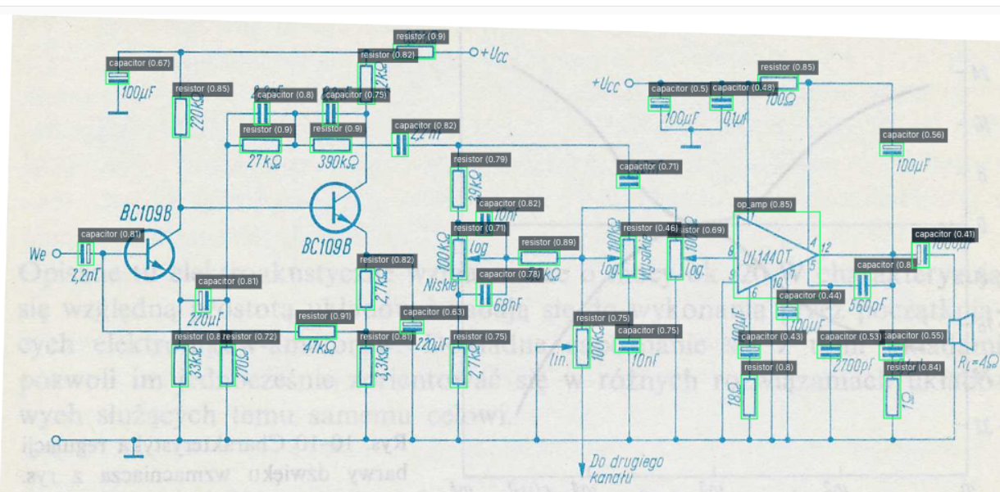
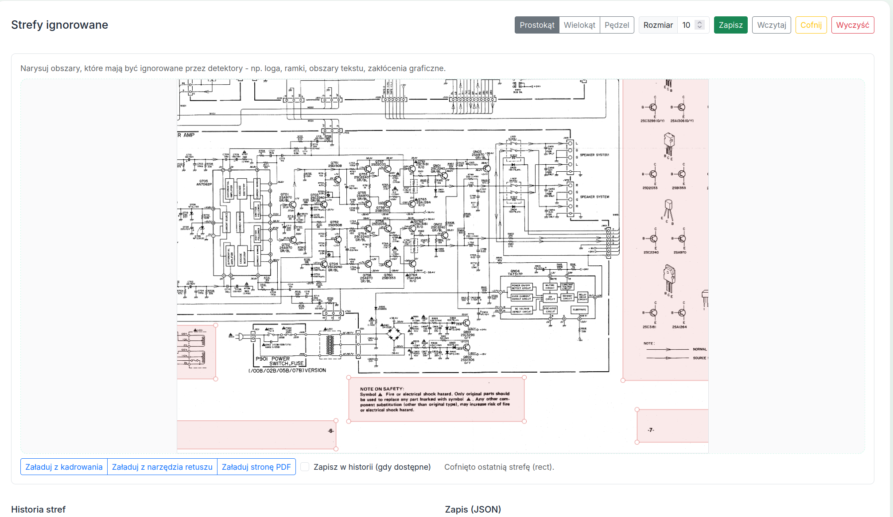
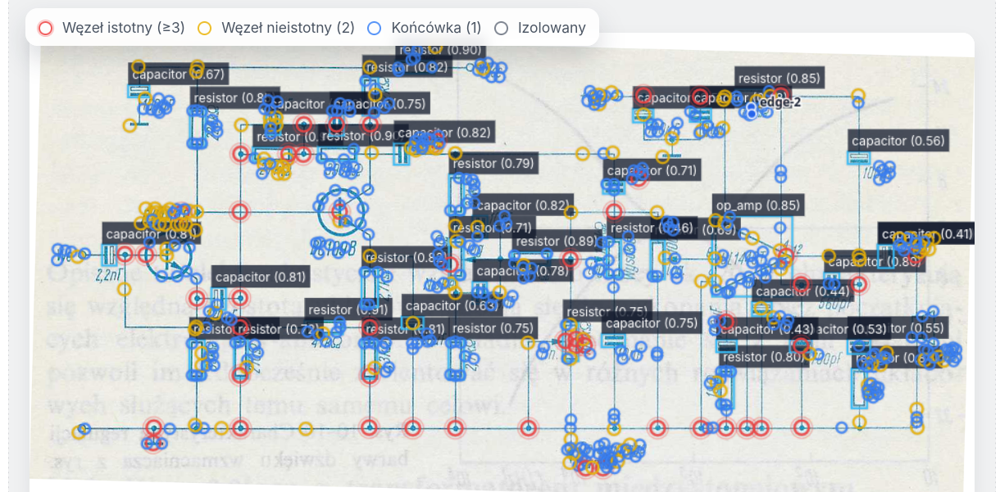
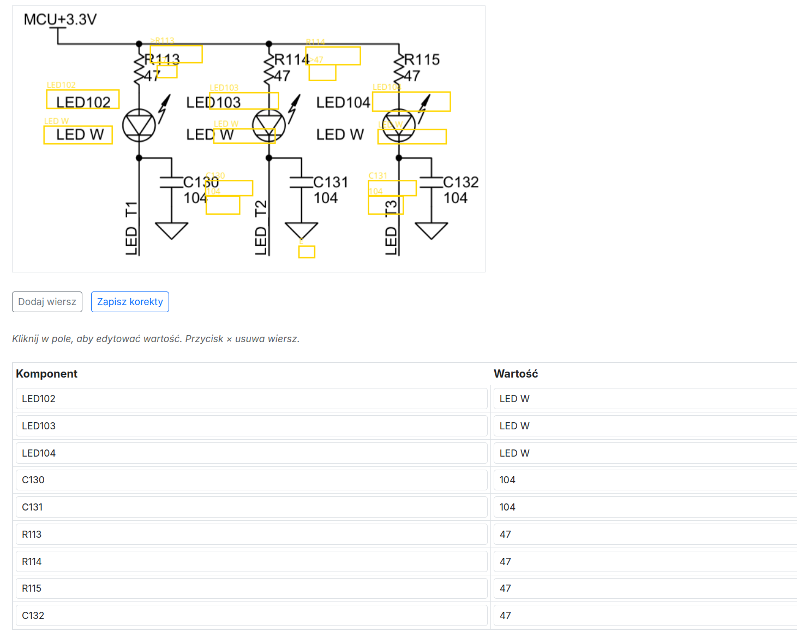

Talk Electronics — AI-Powered Schematic Analysis
Od skanu schematu do pełnej diagnostyki — w jednej aplikacji
Czym jest Talk Electronics?
Talk Electronics to webowa aplikacja do automatycznej analizy schematów elektronicznych. Zamienia skany PDF i zdjęcia obwodów drukowanych w dane maszynowe: wykrywa komponenty, odczytuje ich wartości, generuje netlistę i prowadzi użytkownika przez diagnostykę — jak rozmowa z doświadczonym serwisantem.
Projekt rozwijam od września 2025 jako product manager,data scientist ,qa tester,prompt engineer (testując różne modele AI przy pisaniu kodu), łącząc Python/Flask backend, modele deep learning (RT-DETR, PaddleOCR) i interaktywny frontend z Canvas API.

Interfejs główny — automatyczny retusz schematu, nawigacja między zakładkami, wybór filtrów do retuszuCo potrafi aplikacja?
🔍 Detekcja symboli elektronicznych (AI)
Serce aplikacji stanowi detektor oparty o RT-DETR-L (Real-Time Detection Transformer) — model transformer, który rozpoznaje komponenty elektroniczne na schemacie: rezystory, kondensatory, tranzystory, układy scalone, cewki, diody.
- Wizualizacja bounding boxów bezpośrednio na schemacie
- Tabela wyników z etykietą, pewnością i współrzędnymi
- Lazy-loading GPU — pamięć alokowana dopiero przy pierwszym użyciu
- Obsługa wielu źródeł: strona PDF, plik graficzny, data-URL

Paleta narzędzi retuszu
Wykrywanie obiektów📝 OCR — odczyt tekstu ze schematów
Moduł OCR oparty o PaddleOCR PP-OCRv4 odczytuje tekst ze schematu z precyzją pikselową:
- Kategoryzacja — automatyczne rozpoznawanie typu tokena: komponent (R1, Q410), wartość (33K, 2SC1740), etykieta sieci (VCC, GND), inne
- Smart pairing — inteligentne parowanie komponentów z ich wartościami (Q410 → 2SC1740, R436 → 100K) z uwzględnieniem semantyki (tranzystory parują z modelami półprzewodników)
- Postprocessing — 16-etapowy pipeline czyszczenia tokenów: korekcja OCR (1O0K→100K), scalanie fragmentów pionowych, usuwanie szumu, naprawa oznaczeń półprzewodników (2SCI740→2SC1740)
- Klikalne bounding boxy — każdy rozpoznany tekst jest interaktywny na Canvasie
✏️ Zaawansowany edytor graficzny
Kompleksowy moduł przygotowania obrazu, bo schematy z rzeczywistości bywają zniszczone, przekrzywione i zaszumione:
- Kadrowanie — prostokątne i wielokątne (polygon)
- Prostowanie — automatyczny deskew + ręczny suwak kąta
- Canvas editor — pędzel, gumka, rysowanie w różnych kolorach z regulacją grubości
- Binaryzacja — metoda Otsu, adaptacyjna, ręczny próg
- Retusz — usuwanie szumu, filtry morfologiczne, medianowe, denoise
- Undo/Redo — pełna historia operacji

Zakładka [Strefy ignorowane]
wykrywanie linii🔗 Generowanie netlisty i eksport SPICE
Na podstawie wykrytych symboli i segmentacji linii aplikacja buduje graf połączeń:
- Automatyczna ekstrakcja linii (szkieletyzacja) i węzłów
- Generowanie netlisty z grafem krawędzi i cyklami
- Edge Connectors — łączenie wielostronicowych schematów z formularzem konektorów
- Eksport do SPICE (.cir) — gotowy deck do symulacji obwodu
💬 Diagnostyczny chat AI
Moduł czatu wykorzystuje wygenerowaną netlistę jako kontekst dla OpenAI API:
- Sugestie pomiarów (napięcie, rezystancja, spadek)
- Flagowanie podejrzanych węzłów i anomalii
- Krok po kroku przez proces naprawy
- Izolacja problemowych sekcji schematu

Zakładka modelu OCR i korekcjiStos technologiczny
Backend
| Technologia | Zastosowanie |
|---|---|
| Python 3.11 | Język główny |
| Flask | Framework webowy (factory pattern + Blueprints) |
| REST API | Komunikacja frontend-backend (JSON) |
AI / Machine Learning
| Model / Biblioteka | Zastosowanie |
|---|---|
| RT-DETR-L (Ultralytics) | Detekcja symboli elektronicznych (transformer) |
| PaddleOCR PP-OCRv4 | OCR z precyzyjnymi bounding boxami |
| PyTorch | Framework deep learning |
| PaddlePaddle 3.3 | Framework dla OCR |
Przetwarzanie obrazów
| Biblioteka | Zastosowanie |
|---|---|
| OpenCV | Binaryzacja, morfologia, deskew, filtry |
| PyMuPDF (fitz) | Rendering PDF → PNG |
| Pillow | Manipulacja obrazami, maski |
| NumPy | Operacje macierzowe |
Frontend
| Technologia | Zastosowanie |
|---|---|
| JavaScript (modularny) | Logika UI |
| Canvas API | Interaktywny edytor obrazu |
| Bootstrap 5.3 | Responsywny layout |
| HTML/CSS | Interfejs użytkownika |
Testy i jakość kodu
| Narzędzie | Zastosowanie |
|---|---|
| Pytest | Testy unit/integration (284+ testów) |
| Playwright | Testy E2E (smoke + full) |
| GitHub Actions | CI/CD z automated checks |
| Pre-commit hooks | isort, flake8, YAML validation |
Infrastruktura
| Technologia | Zastosowanie |
|---|---|
| Linux (Ubuntu) | Środowisko produkcyjne |
| Docker | Konteneryzacja (GPU training) |
| Conda | Zarządzanie środowiskiem |
| DigitalOcean | Docelowy hosting |
Pipeline danych syntetycznych
Jednym z unikalnych elementów projektu jest pipeline generowania danych treningowych:
- KiCad API → automatycznie generowane schematy elektroniczne
- Eksport → PDF/PNG w 300 DPI z anotacjami COCO
- Augmentacje — albumentations: szum, blur, rotacja, dropout (profile: light/scan/heavy)
- Konwersja → COCO → format YOLO z automatycznym splitem train/val/test
Dzięki temu model uczy się nie tylko na ręcznie zanotowanych danych, ale na tysiącach automatycznie wygenerowanych schematów — co dramatycznie przyspiesza iteracje.
Dokąd zmierzamy?
Wizja
Celem Talk Electronics jest stworzenie kompletnego narzędzia do analizy i naprawy elektroniki, które:
- Zamienia każdy skan schematu w interaktywny, maszynowo-czytelny dokument
- Prowadzi użytkownika krok po kroku przez diagnostykę usterki
- Uczy się na każdej korekcie — im więcej napraw, tym system celniejszy
Najbliższe cele
| Faza | Opis | Termin |
|---|---|---|
| Faza I | Pełna integracja OCR + RT-DETR + netlista | Kwiecień 2026 |
| Faza II | Beta pipeline: Obraz → detekcja → OCR → netlista → chat AI | Czerwiec 2026 |
| Faza III | Deploy produkcyjny na DigitalOcean + testy na trudnych schematach | Sierpień 2026 |
Długofalowa wizja
- Dialog diagnostyczny — system sugeruje konkretne pomiary i buduje przebieg diagnozy
- Proces naprawy — wskazania, które elementy wymienić i jak zweryfikować naprawę
- Self-improving — każda korekta użytkownika trafia do bazy treningowej, model staje się coraz lepszy
- Obsługa legacy hardware — schematy z lat 70–90, papierowe, zniszczone, słabo czytelne
Kluczowe wyróżniki
Nie tylko detektor — pełna ścieżka od PDF przez analizę do diagnostyki i symulacji SPICE. **🏠 Lokalna AI**
RT-DETR i PaddleOCR działają lokalnie — bez kosztów chmury, z pełną kontrolą nad danymi. **✏️ Interaktywna edycja**
Canvas editor na każdym etapie — kadrowanie, retusz, deskew, strefy ignorowane.
Unit + E2E (Playwright) z CI/CD na GitHub Actions. **📊 Syntetyczny pipeline danych**
KiCad → COCO → YOLO z augmentacjami — tysiące schematów treningowych. **🤖 Duet człowiek + AI**
Unikalna metodyka: PM dostarcza domenową wiedzę, AI implementuje — szybkie iteracje.
Repozytorium
Strona portfolio · Robert Bąk · Marzec 2026